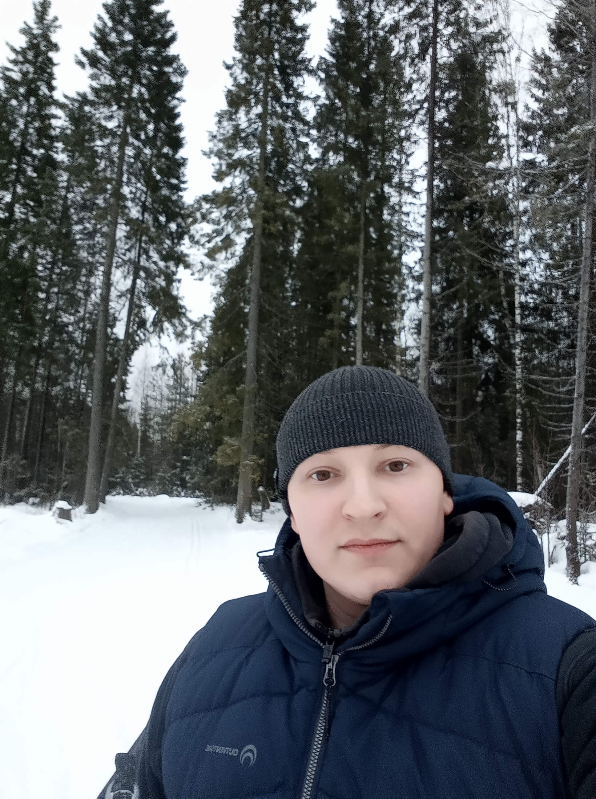
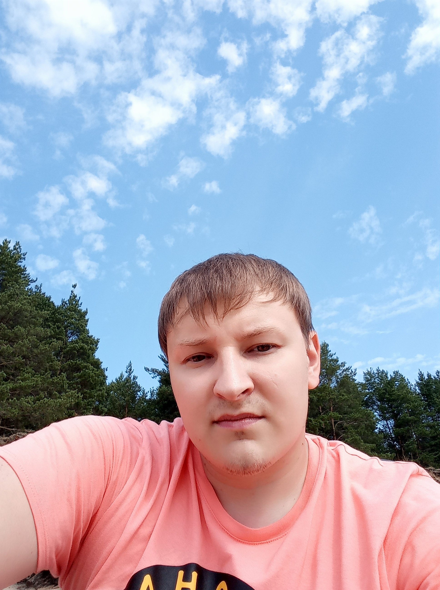
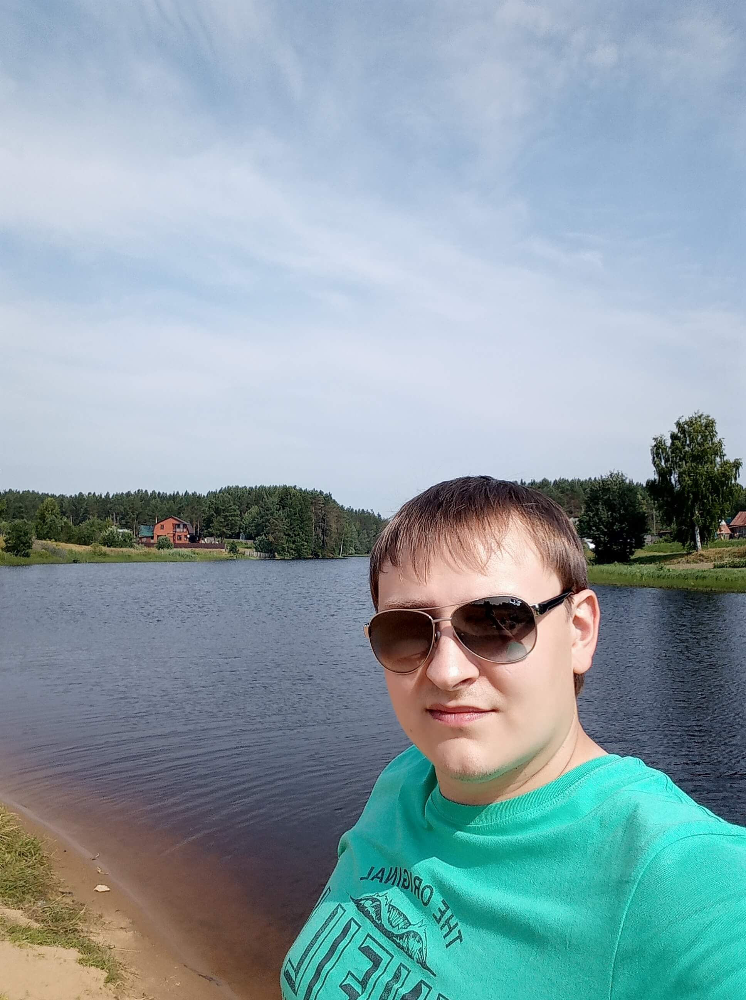

HTML
CSS
JS
Обо мне
Привет снова всем! Итак, вы уже знаете, что меня зовут Стас. Немного о себе: 33 года, женат, 2 детей, с детства люблю творчество, живу в г. Березники, Россия. Почему веб-программирование? Все элементарно - мне это нравится, профессия настоящего и будущего, благодаря которой я могу обеспечить себя и свою семью, на данный момент я специализируюсь на front-end разработке. Почему вы должны выбрать меня? К каждому заказу подхожу с большой ответственностью, так как хочу сделать себе имя, исключить халатность, полностью изучить проект, клиента и его целевую аудиторию, работать на качество, стараясь сделать заказ максимально быстро и уникально по возможности с учетом всех правок и пожеланий. Доверившись мне, вы получите максимальную отдачу от своего проекта, сэкономите нервы и время. Если вы заинтересовались мной, хотите узнать что-то еще или воспользоваться моими услугами, то ниже я предоставлю все свои контакты.
  